Legacy Document
Important: The information in this document is obsolete and should not be used for new development.
Important: The information in this document is obsolete and should not be used for new development.


The PowerPC Native Environment
A run-time environment is a set of conventions that determine how code is loaded into memory, where data is stored and how it is addressed, and how functions call other functions and system software routines. The run-time environment available on a specific Macintosh computer is determined jointly by the Macintosh system software (which manages the loading and scheduling of executable code) and your software development system (which generates code to conform to the documented run-time conventions).The run-time environment for native PowerPC code is significantly different from the run-time environment for 680x0 code with which you are probably already familiar.
In general, however, the PowerPC run-time environment is both simpler and more powerful than the 680x0 run-time environment. This increased simplicity and power
are due primarily to the use of fragments as the standard way of organizing executable code and data in memory. In the native PowerPC run-time environment, all discrete collections of executable code--including applications, code resources, extensions, and even the system software itself--are organized as fragments when loaded into memory. Accordingly, all executable code shares the benefits that derive from the organization of fragments, including
This section describes the run-time environment for applications and other software executing on PowerPC processor-based Macintosh computers. It describes in detail
- a uniform set of calling conventions
- the ability to store code called by many applications or other software in
import libraries- a simplified means of addressing global data
- the ability to execute special initialization and termination routines when the fragment is loaded into and unloaded from memory
- the structure of fragments
- how to address global code and data
- subroutine invocation
- PowerPC stack frames
- import libraries
- the organization of memory
- IMPORTANT
- Keep in mind that the run-time environment defined by the use of fragments might in the future be available on 680x0-based Macintosh computers (and not solely on PowerPC processor-based Macintosh computers). The new run-time environment based on fragments is intended to be as processor independent as possible.

Fragments
In the run-time environment introduced in the first version of the system software for PowerPC processor-based Macintosh computers, the basic unit of executable code and its associated data is a fragment. All fragments share a number of fundamental properties, such as their basic structure and their method of accessing code or data contained in themselves or in other fragments. There are, however, different uses for fragments, just as there are different uses for executable code in the 680x0 environment. Fragments can be loosely differentiated into three categories, based on how they
are used.
Import libraries and system extensions are sometimes called shared libraries, because the code and data they contain can be shared by multiple clients. Import libraries and system extensions are also called dynamically linked libraries, because the link between your application and the external code or data it references occurs dynamically at application launch time.
- An application is a fragment that can be launched by the user from the Finder (which calls the Process Manager to do the actual launching), typically to process documents or other collections of information. An application almost always has a user interface and uses standard event-driven programming techniques to control its execution.
- An import library is a fragment that contains code and data accessed by some other fragment or fragments. The Macintosh system software, for instance, is an import library that contains the code (and data) implementing the Macintosh Toolbox and Operating System routines. When you link an import library with your application, the import library's code is not copied into your application. Instead, your application contains symbols known as imports that refer to some code or data in the import library. When your application is launched, the system software automatically resolves any imports your application contains and creates a connection to the appropriate import libraries.
- An extension is a fragment that extends the capabilities of some other fragment. For example, your application might use external code modules like menu definition functions, control definition functions, or data-conversion filters. Unlike import libraries, extensions must be explicitly connected to your application during its execution. There are two types of extensions: application extensions and system extensions. An application extension is an extension that is used by a single application. A system extension is an extension that is used by the Operating System or by multiple applications; it is usually installed at system startup time from a resource of type
'INIT','DRVR', or'CDEV'.
The physical storage for a fragment is a container, which can be any kind of object accessible by the Operating System. The system software import library, for example, is stored in the ROM of a Macintosh computer. Other import libraries are typically stored in files of type
'shlb'. The fragment containing an application's executable code is stored in the application's data fork, which is a file of type'APPL'. An extension can
be stored in a data file or in a resource in some file's resource fork.
Before the code or data in a fragment can be used, it must be loaded into memory from its container and prepared for execution. This process is usually handled automatically by the Code Fragment Manager, the part of the Macintosh Operating System responsible for loading and preparing fragments. Fragment preparation consists mainly in resolving any imports in the fragment; the Code Fragment Manager searches for another fragment (an import library) that exports the symbols imported by the fragment being loaded. Of course, the import library containing the code or data imported by the first fragment might itself contain imported symbols from yet a third fragment. If so, the Code Fragment Manager needs to load and prepare the third fragment, then the second fragment, and finally the first fragment.
- IMPORTANT
- In general, it's best to put an application extension into the data fork of some file (possibly even the application's data fork itself), not into a resource. There is, however, one notable exception to this rule, namely when the extension is PowerPC code that is intended to operate in the same way as a 680x0 stand-alone code module. See "Executable Resources" on page 1-34 for more information.
To load fragments into memory from the containers they are stored in, the Code Fragment Manager uses the Code Fragment Loader, a set of low-level services called mainly by the Code Fragment Manager. The Code Fragment Loader is responsible for knowing about container formats, such as PEF and XCOFF. Unless you need to design a new container format, you do not need to use the Code Fragment Loader. Currently, however, the application programming interface to the Code Fragment Loader is private.
- IMPORTANT
- In general, the Code Fragment Manager is called by the Operating System in response to a request to load some specific fragment (for example, when the user launches an application). The import libraries used by that fragment are loaded automatically, if the Code Fragment Manager can find them. The Code Fragment Manager usually operates completely transparently, just like the 680x0-based Segment Manager. You need to use the Code Fragment Manager only if your application uses custom application extensions. See the beginning of the chapter "Code Fragment Manager" in this book for details.
The following sections describe the organization and operation of fragments in
greater detail.The Structure of Fragments
Once a fragment has been loaded into memory and prepared for execution, the code and data it contains are available to itself and to any fragments that import parts of that code and data. The code and data of a particular fragment are loaded into separate sections
or regions of memory. In general, the code and data sections of a loaded fragment are
not contiguous with one another in memory. Instead, the data section of a fragment is loaded either into your application's heap or into the system heap. The code section of a fragment is usually loaded elsewhere in memory. (See "File Mapping" beginning on page 1-53 for details on the location of the code sections of a fragment.) Regardless of where it is loaded, there is no segmentation within a code section of a fragment.Because every fragment contains both code and data sections, it follows that any code executing in a fragment-based run-time environment--not just application code--can have global variables. (In the 680x0 run-time environment, it's difficult for some kinds of code to have global variables.) In addition, there is no practical limit on the size of a fragment's data section. By contrast, the total size of an application's global variables
in the 680x0 environment is 32 KB, unless your development system provides special capabilities to exceed that limit.Fragments created by the currently available linkers contain one section of code and one section of static data (although it's theoretically possible to have more than one of each type of section). A fragment's code section must contain pure executable code, that is, code that is independent of the location in memory where it is loaded. Pure code can be loaded anywhere in memory. As a result, it cannot contain any absolute branches. In addition, any references to the fragment's data must be position-independent: there can be no absolute data addresses in the code. Because the code contained in a fragment's code section must be pure and position-independent, and because a code section is always read-only, a fragment can be put into ROM or paged directly from an application file. In addition, it's much easier to share pure code than it is to share impure code. This makes it very easy to implement import libraries as fragments.
A fragment's data section contains the static data defined by the fragment. An applica-
tion's data section is typically loaded into the application's heap. An import library's data section can be loaded into the system heap or into the heap of any application that uses the import library. Indeed, it's possible for an import library's data section to be loaded into memory at multiple locations, thereby creating more than one copy of the data. This is especially useful for providing different applications with their own copy of a library's data. See "Import Libraries" beginning on page 1-50 for more details on this.Even though a fragment's code and data sections can be loaded anywhere in memory, those sections cannot be moved within memory once they've been loaded. Part of the process of loading a fragment into memory is to resolve any dependencies it might have upon other fragments. This preparation involves inserting into part of the fragment's data section a number of pointers to data and code imported by the fragment from
other fragments, as described in the following section. To avoid having to perform
this fragment preparation more than once, the Operating System requires that a loaded fragment remain stationary in memory for as long as it is loaded.
- Note
- In the 680x0 environment, an application's code can be unloaded (by the Memory Manager) and later reloaded into a different place in memory. This difference in run-time behavior leads to some important restrictions on stand-alone PowerPC code resources (called accelerated resources) that mimic the behavior of existing kinds of 680x0 code resources. See "Executable Resources" beginning on page 1-34 for details.
Imports and Exports
As you've seen, a fragment (for example, an application) can access the code and data contained in some other fragment (typically an import library) by importing that code and data. Conversely, an import library can export code and data for use by other fragments (applications, extensions, or even other import libraries). It's the responsibility of the linker to resolve any imports in your application (or other code fragment) to exports in some import library. The linker generates symbols that contain the name of the exporting library and the name of the exported symbol and inserts those symbols into your linked application.Figure 1-2 illustrates how the linker resolves imports in an application. The SurfWriter object module contains a number of unresolved symbols. Some of the symbols reference code that is part of the system software contained in the InterfaceLib import library. Other unresolved symbols reference code in the SurfTool import library. The linker resolves those symbols and creates the SurfWriter application, which contains the names of the appropriate import library and function.
Figure 1-2 Creating imports in a fragment
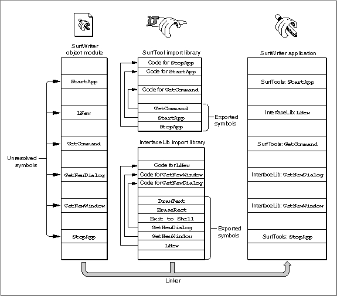 When your application is launched, the Code Fragment Manager searches for the linker-generated import symbols and replaces them with the addresses of the imported code or data. To do this successfully, the Code Fragment Manager needs to find the appropriate import library and load it into memory if it isn't already in memory. Then, it needs to bind the imported symbols in your application to the actual addresses, in the import library, of the imported code or data. Once the loading and binding of import libraries are complete, your application can execute.
It's possible to designate some of the imports in your application (or other software) as soft. A soft import is an imported symbol whose corresponding code or data might not be available in any import library on the host machine and which is therefore undefined at run time. For example, a particular system software component such as QuickTime might not be available on all Macintosh computers. As a result, if you call QuickTime routines, you should mark all those imports as soft. When the Code Fragment Manager loads and prepares your application, it resolves the soft imports if the QuickTime code and data are available. If the QuickTime code and data aren't available, the Code Fragment Manager inserts an invalid address (namely,
- Note
- When binding imported symbols to external code and data, the Code Fragment Manager ensures that the version of the import library
used at link time to resolve external symbols is compatible with the version used at fragment loading time. See the chapter "Code Fragment Manager" in this book for a description of this version-checking capability. In general, this all happens transparently to your application or other code.kUnresolvedSymbolAddress) into your fragment's table of contents entry for any QuickTime routines or data items.
For most system software services, you can use the
- WARNING
- You should always check to see that any imports declared as soft by your software were successfully resolved at load time. Trying to access code or data referenced by an unresolved soft import will cause your software to crash.
Gestaltfunction to determine if the necessary code or data is available in the current operating environment. Note that this is not a new requirement and should not cause you to change your existing source
code; existing 680x0 software should also callGestaltto ensure that needed system software services are available. When noGestaltselector exists to test for the existence of a particular routine or data item, you can check for unresolved soft imports by comparing the address of the import tokUnresolvedSymbolAddress. Listing 1-4 illustrates this technique.Listing 1-4 Testing for unresolved soft imports
extern int printf (char *, ...); ... if (printf == kUnresolvedSymbolAddress) DebugStr("\printf is not available."); else printf("Hello, world!\n");See the description of the MakePEF tool in the book Building Programs for Macintosh With PowerPC for exact details on how to specify imports as soft.The Table of Contents
The imported symbols in a fragment are contained in a special area in the fragment's data section known as the table of contents (TOC). Prior to preparation by the Code Fragment Manager, a table of contents contains unresolved references to code and data in some other fragment. After preparation, the table of contents contains a pointer to each routine or data item that is imported from some other fragment. This provides a means of global addressing whereby a fragment can locate the code or data it has imported from other fragments.
A fragment's table of contents also contains pointers to the fragment's own static data. Because the code and data sections of a fragment are usually loaded into different locations in memory, and because they must both be position-independent, the code section needs a method of finding its own data, such as data addressed by global variables. Global variables are addressed through the fragment's table of contents. Within the compiled code of your application, references to global variables appear as indirect references via offsets into the table of contents.
- Note
- As you can see, the phrase "table of contents" is a slight misnomer, because a fragment's table of contents does not supply a list of the addresses of routines or data in the fragment itself. Rather, a fragment's table of contents consists (in part) of the addresses of code and data that the fragment imports, which reside in some other fragment. The table of contents is more akin to a personal address book. A fragment's table of contents is private to the fragment itself and exists solely to provide external linkage for the code in the fragment.
Of course, for this scheme to work, the code section of a fragment needs to know where in memory its TOC begins. The address of the TOC cannot be compiled into the fragment; instead, the address of the TOC of the currently executing fragment is maintained in a register on the microprocessor. Currently, the general-purpose register GPR2 is dedicated to serve as the Table of Contents Register (RTOC). It contains the address in memory of the beginning of the TOC of the currently executing fragment.
It's easy to see how a code fragment can find its own global data. It simply adds the compiled-in offset of a global variable within the TOC to the address of the TOC contained in the RTOC. The result is the address of a pointer to the desired data.
It's slightly more complicated to see how a code fragment can execute an external piece of code. As it does with global data, the linker accesses external code via an offset into the TOC. The corresponding address in the TOC, however, is not the address of the piece of external code itself. Instead, the TOC of the calling fragment contains the address--in the static data section of the called fragment--of a transition vector, a data structure that contains two pointers: the address of the routine being called and the address of the called fragment's TOC. The basic structure of a transition vector is shown in Figure 1-3.
Figure 1-3 A transition vector
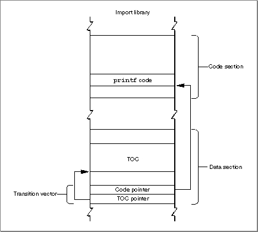
A TOC entry for an external routine points to a transition vector largely so that the calling routine can set up an RTOC with the called fragment's TOC value. Then, when the called routine exits, the caller restores the RTOC to its original value, pointing to the TOC of the calling fragment. This kind of function call is known as a cross-TOC call. During a cross-TOC call, GPR12 is assumed to point to the transition vector itself; this convention allows the called routine to access any additional fields in the transition vector beyond the first two.
- Note
- Strictly speaking, a transition vector can contain any number of pointers, as long as there are at least two. The first pointer is always the address of the routine being called, and the second pointer is always a value to be loaded into GPR2 prior to the execution of that routine. The second pointer in a transition vector can serve any purpose appropriate to the called routine. In the PowerPC environment for Macintosh computers, the second pointer is almost always the TOC address of the fragment containing the called routine. However, the callee is free to use the second pointer in other ways, if this is deemed useful. Your development system's compiler ultimately determines the size and contents of a transition vector.
To access data stored in another fragment, there is no need for the caller to install the TOC address of the other fragment in the RTOC. Instead, the TOC entry of the calling fragment contains a pointer to the external data, in exactly the same way that a TOC entry for global data in the same fragment contains a pointer to that data.
In short, a fragment's table of contents contains
- one pointer for each imported routine called by the fragment; this pointer is the address of a transition vector in the data section of the import library.
- one pointer for each external data item used by the fragment; this pointer is the address of the data in the data section of the import library.
- one pointer for each global variable.
- one pointer for each pool of C
staticdata internal to the fragment.
The size of a fragment's TOC is determined at the time your source code is compiled
- Note
- Compilers and assembly-language programmers may place additional items in a fragment's table of contents.
and linked, but the actual values in the TOC cannot be determined until the fragment
is loaded and prepared for execution. When the Code Fragment Manager loads a fragment, it also loads any fragments that contain exports used by that fragment; at that
time, the addresses of those exports can be determined and placed into the original
fragment's TOC.The TOC provides the means whereby a routine in a given fragment can find its own static data and any external routines it calls. In providing access to a fragment's own data, the TOC is analogous to the A5 world in applications created for the 680x0 run-
time environment. The TOC is more general than the A5 world, however, at least insofar as it allows stand-alone code to have global data; in the 680x0 environment, only applications have an A5 world and its resulting easy access to global data.The Code Fragment Manager is responsible for dynamically resolving symbols in an unprepared TOC by binding them with their referents. This process involves finding unresolved imported symbols in the TOC, searching for the code or data they refer to, and replacing the symbols with the relevant addresses. This indirection through the TOC gives rise to a number of useful features.
Notice that TOC entries that point into another fragment always point into the data section of that fragment. This is a consequence of the fact that code is exported only through a transition vector in the fragment's data section. Code symbols are never exported directly, but only via data symbols.
- Routines external to a fragment can be specified by name, not by address. This allows routines to be grouped into import libraries.
- Data can be specified by name, not by address.
- Callback routines can be specified by name, not by address.
- Initialization and termination routines can be included in a fragment and are executed automatically by the Code Fragment Manager when the fragment is connected and disconnected, respectively.
- A fragment's data can be either shared among multiple applications or instantiated separately for each application that uses the fragment. This feature is especially useful for fragments that are import libraries.
- The Code Fragment Manager can treat two import libraries as a single import library for the purposes of symbol resolution. This feature is especially useful for creating an update library--an import library that contains enhancements or bug fixes for an existing import library.
- A fragment's code and data can be loaded anywhere in memory, because the address of a routine or a piece of data is always relative to the address contained in the RTOC.
Because entries in a TOC are addressed using a register value plus an offset, and because offsets are signed 16-bit quantities, a table of contents can be at most 64 KB in size, with at most 16,384 entries. As already noted, current compilers and linkers create only one TOC per fragment. If you need to work with more than 16,384 pointers, you can create one or more import libraries, each of which can itself contain up to 16,384 pointers. As a practical matter, this is not a serious limitation.
Although transition vectors are used primarily for cross-TOC calls (as described above), they are also used for pointer-based function calls. Whenever your application takes the address of a function (even one inside the same fragment), a transition vector is allocated to point to that function. Indeed, all function pointers in PowerPC code are actually pointers to transition vectors. If you are writing in assembly language, you need to be sure to export pointers to transition vectors instead of to actual code.
- Note
- Future development tools might not create a TOC at all. The method
of collecting a fragment's imported symbols and global data references into a table of contents is independent of the method of packaging code and data into a fragment. A fragment doesn't need to have a table of contents, but all current development systems that create fragments do in fact create a single table of contents in each fragment.Special Routines
A fragment can define three special symbols that are separate from the list of symbols exported by the fragment. These symbols define an initialization routine, a termination routine, and a main routine (or block of data). These routines, if present, are called at specific times during the loading, unloading, or normal execution of a fragment. A fragment that is an application must define a main symbol that is the application's entry point. Import libraries and extensions may or may not define any of these symbols.A fragment's initialization routine is called as part of the process of loading and preparing the fragment. You can use the initialization routine to perform any actions that should be performed before any of the fragment's other code or static data is accessed. When a fragment's initialization routine is executed, it is passed a pointer to a fragment initialization block, a data structure that contains information about the fragment. In particular, the initialization block contains information about the location of the fragment's container. (For example, if an import library's code fragment is contained in some file's data fork, you can use that information to find the file's resource fork.)
It's important to know when the initialization routine for a fragment is executed. If the loading and preparation of a fragment cause a (currently unloaded) import library to be loaded in order to resolve imports in the first fragment, the initialization routine of the import library is executed before that of the first fragment. This is obviously what you would expect to happen, because the initialization routine of the first fragment might need to use code or data in the import library. In case there are two import libraries that depend upon each other, their developer may specify which should be initialized first.
A fragment's termination routine is executed as part of the process of unloading a fragment. You can use the termination routine to undo the actions of the initialization routine or, more generally, to release any resources or memory allocated by the fragment.
The use of a fragment's main symbol depends upon the type of fragment containing it. For applications, the main symbol refers to the main routine, which is simply the usual entry point. The main routine typically performs any necessary application initialization not already performed by the initialization routine and then jumps into the application's main event loop. For import libraries, the main symbol (if it exists) is ignored. For extensions having a single entry point, a main routine can be used instead of an exported symbol to avoid having to standardize on a particular name.
- Note
- See "Fragment-Defined Routines" beginning on page 3-26 in the chapter "Code Fragment Manager" in this book for more information about a fragment's initialization and termination routines.
- IMPORTANT
- In fact, the main symbol exported by a fragment does not have to refer to a routine at all; it can refer instead to a block of data. You can use this fact to good effect with application extensions, where the block of data referenced by the main symbol can contain essential information about the extension. For instance, a loadable tool contained in a fragment might store its name, icon, and other information in that block. The Code Fragment Manager returns the address of the main symbol when you programmatically load and prepare a fragment.
Fragment Storage
As you've learned, the physical storage for a fragment is a container. A container can be any logically contiguous piece of storage, such as the data fork of a file (or some portion thereof), the Macintosh ROM, or a resource. In the first version of the system software
for PowerPC processor-based Macintosh computers, the Code Fragment Loader can recognize two kinds of container formats, the Extended Common Object File Format (XCOFF) and the Preferred Executable Format (PEF).XCOFF is a refinement of the Common Object File Format (COFF), the standard executable file format on many UNIX
\xAE-based computers. XCOFF is supported on Macintosh computers primarily because the early development tools produce executable code in the XCOFF format.
PEF is an object file format defined by Apple Computer. A container in the PEF format is dramatically smaller than the corresponding container in the XCOFF format. This smaller size reduces both the disk space occupied by the container and the time needed to load the container's code and data into memory. More importantly, PEF provides support for a fragment's optional initialization and termination routines and for the version checking performed by the Code Fragment Manager when an import library is connected to a fragment.
- IMPORTANT
- Not all object code in the XCOFF format will execute on Macintosh computers. Any XCOFF code that uses UNIX-style memory services or that otherwise depends on UNIX features will not execute correctly on Macintosh computers.
As you know, the mixed environment provided by the first version of the system software for PowerPC processor-based Macintosh computers allows the user to run
both 680x0 and PowerPC applications. The Process Manager needs some method of determining, at the time the user launches an application, what kind of application it is. Because the mixed environment is intended to support existing 680x0 applications unmodified, the Process Manager assumes that an application is a 680x0 application, unless you specifically indicate otherwise. You do this by including, in the resource fork of your PowerPC application, a code fragment resource. This resource (of type'cfrg'and ID 0) indicates the instruction set architecture of your application's executable code, as well as the location of the code's container. Typically, the code and data for a PowerPC application are contained in your application's data fork, as shown in Figure 1-4.Figure 1-4 The structure of a PowerPC application
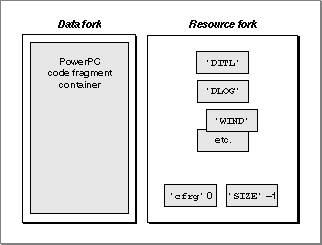 If your application contains a code fragment resource, the Process Manager calls the Code Fragment Manager to load and prepare your application's code and data. If, on the other hand, your application does not contain a code fragment resource, the Process Manager assumes that your application is a 680x0 application; in this case, the Process Manager calls the Segment Manager to load your application's executable code from resources of type
'CODE'in your application's resource fork, as illustrated in Figure 1-5.Figure 1-5 The structure of a 680x0 application
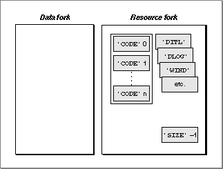 Listing 1-5 shows the Rez input for a sample code fragment resource.
Listing 1-5 The Rez input for a sample
'cfrg'resource
#include "CodeFragmentTypes.r" resource 'cfrg' (0) { { kPowerPC, /*instruction set architecture*/ kFullLib, /*no update level for apps*/ kNoVersionNum, /*no implementation version number*/ kNoVersionNum, /*no definition version number*/ kDefaultStackSize, /*use default stack size*/ kNoAppSubFolder, /*no library directory*/ kIsApp, /*fragment is an application*/ kOnDiskFlat, /*fragment is on disk*/ kZeroOffset, /*fragment starts at fork start*/ kWholeFork, /*fragment occupies entire fork*/ "SurfWriter" /*name of the application*/ } };The'cfrg'resource specification in Listing 1-5 indicates, among other things, that the application consists of PowerPC code, that the code is contained in the application's data fork, and that the code container occupies the entire data fork. It's possible to have the container occupy only part of the data fork, if you need to put other information in
the data fork as well. (Some applications, for instance, put copyright or serial number information in their data fork.) You do this by specifying a nonzero offset for the begin-
ning of the code fragment. Alternatively, you can move the information previously contained in the data fork into one or more resources in your application's resource fork, thereby reserving the entire data fork for the PowerPC code fragment.
This recommended placement of an application's PowerPC code in the data fork makes it easy to create fat applications that contain both PowerPC and 680x0 executable code. A fat application contains 680x0 code in
- Note
- For information about the other fields in a code fragment resource,
see the chapter "Code Fragment Manager" in this book.'CODE'resources in the resource fork and PowerPC code in the data fork, as shown in Figure 1-6.Figure 1-6 The structure of a fat application
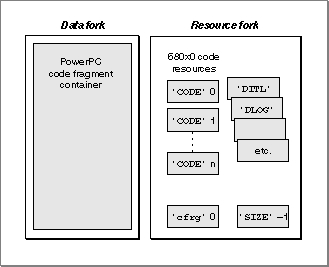 The advantage of a fat application is that it can be executed on either 680x0-based or PowerPC processor-based Macintosh computers. The Process Manager on 680x0-based Macintosh computers knows nothing about
'cfrg'resources. As a result, it ignores the code contained in the data fork and uses the code contained in the application's'CODE'resources. The Process Manager on PowerPC processor-based Macintosh computers, however, reads the'cfrg'resource and uses the code in the specified location (usually, the data fork); the 680x0'CODE'resources in the resource fork are ignored.Ideally, you should package your application as a fat application, to give your users maximum flexibility in how they manage their working environment. For example, a user might move a storage device (such as a hard disk) containing your application from a 680x0-based Macintosh computer to a PowerPC processor-based Macintosh computer. If your application is fat, it can be launched successfully in either environment.
For various reasons, however, you might decide not to package your application as a
fat application. If so, you should at the very least include an executable 680x0'CODE'resource that displays an alert box informing the user that your application runs only on PowerPC processor-based Macintosh computers.
- Note
- Import libraries also need a code fragment resource, to indicate the location of the container and the appropriate version information.
See the chapter "Code Fragment Manager" in this book for information about creating a 'cfrg' resource for an import library.Executable Resources
The Code Fragment Manager is extremely flexible in where it allows fragments to be stored. As you've seen, an application's executable code and global data are typically stored in a container in the application's data fork. Import libraries supplied as part of the Macintosh system software are often stored in ROM, while import libraries created by third-party developers are usually stored in the data forks of files on disk. It's also possible to use resources as containers for executable PowerPC code. This section describes how to work with executable resources in the PowerPC environment.There are two kinds of executable resources you can create that contain PowerPC code: resources whose behavior is defined by the system software (or by some other software) and those whose behavior is defined by your application alone. For present purposes, these two kinds of resources are called accelerated and private resources, respectively.
First, you can put an executable PowerPC code fragment into a resource to obtain
- Note
- The terms accelerated and private are used here simply to help distinguish these two kinds of executable resources containing PowerPC code. They are not used elsewhere in this book or in Inside Macintosh.
a PowerPC version of a 680x0 stand-alone code module. For example, you might recompile an existing menu definition procedure (which is stored in a resource of type'MDEF') into PowerPC code. Because the Menu Manager code that calls your menu definition procedure might be 680x0 code, a mode switch to the PowerPC environment might be required before your definition procedure can be executed. As a result, you need to prepend a routine descriptor onto the beginning of the resource, as shown in Figure 1-7. These kinds of resources are called accelerated resources because they are faster implementations of existing kinds of resources. You can transparently replace 680x0 code resources by accelerated PowerPC code resources without having to change the software (for example, the application) that uses them.Figure 1-7 The structure of an accelerated resource
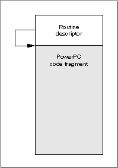 Sometimes it's useful to keep the executable code of a definition function in some location other than a resource. To do this, you need to create a stub definition resource that is of the type expected by the system software and that simply jumps to your code. For example, Listing 1-6 shows the Rez input for a stub list definition resource.
Listing 1-6 Rez input for a list definition procedure stub
data 'LDEF' (128, "MyCustomLDEF", preload, locked) { /*need to fill in destination address before using this stub*/ $"41FA 0006" /*LEA PC+8, A0 ;A0 <- ptr to destination address*/ $"2050" /*MOVEA.L (A0), A0 ;AO <- destination address*/ $"4ED0" /*JMP (A0) ;jump to destination address*/ $"00000000" /*destination address*/ };Your application (or other software) is responsible for filling in the destination address before the list definition procedure is called by the List Manager. For 680x0 code, the destination address should be the address of the list definition procedure itself. For PowerPC code, the destination address should be a universal procedure pointer (that is, the address of a routine descriptor for the list definition procedure).By contrast, you can create a resource containing executable PowerPC code solely for the purposes of your application (perhaps on analogy with the standard kinds of code-
bearing resources used by the system software). Because these kinds of executable resources do not conform to a calling interface defined by the system software (or by some other widely available software, such as HyperCard), they are called private resources. The code in private resources is called only by your application, not by any other external code. As a result, there is no need to put a routine descriptor onto the beginning of the executable code. Figure 1-8 shows the general structure of a private resource.Figure 1-8 The structure of a private resource
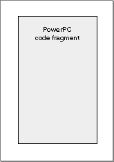 It's important to understand the distinction between accelerated and private resources, so that you know when to create them and how to load and execute the code they contain. An accelerated resource is any resource containing PowerPC code that has a single entry point at the top (the routine descriptor) and that models the traditional behavior of a 680x0 stand-alone code resource. There are many examples, including menu definition procedures (stored in resources of type
'MDEF'), control definition functions (stored in resources of type'CDEF'), window definition functions (stored in resources of type'WDEF'), list definition procedures (stored in resources of type'LDEF'), HyperCard extensions (stored in resources of type'XCMD'), and so forth. A private resource is any other kind of executable resource whose code is called directly by your application.
In most cases, you don't need to do anything special to get the system software to recognize your accelerated resource and to call it at the appropriate time. For
- IMPORTANT
- For several reasons, it's generally best to avoid using private resources unless you absolutely must put some code into a resource. As you'll see later (in "File Mapping" on page 1-53), the executable code of a private resource is loaded into your application's heap and is not eligible for
file mapping. Whenever possible, you should put executable PowerPC code into your application's data fork or create your own application-
specific files.
example, the Menu Manager automatically loads a custom menu definition procedure into memory when you callGetMenufor a menu whose'MENU'resource specifies
that menu definition procedure. Similarly, HyperCard calls code like that shown in
Listing 1-7 to load a resource of type'XCMD'into memory and execute the code
it contains.Listing 1-7 Using an accelerated resource
Handle myHandle; XCmdBlock myParamBlock; myHandle = Get1NamedResource('XCMD', '\pMyXCMD'); HLock(myHandle); /*Fill in the fields of myParamBlock here.*/ CallXCMD(&myParamBlock, myHandle); HUnlock(myHandle);The caller of an accelerated resource executes the code either by jumping to the code (if the caller is 680x0 code) or by calling the Mixed Mode ManagerCallUniversalProcfunction (if the caller is PowerPC code). In either case, the Mixed Mode Manager calls the Code Fragment Manager to prepare the fragment, which is already loaded into memory. With accelerated resources, you don't need to call the Code Fragment Manager yourself. In fact, you don't need to do anything special at all for the system software
to recognize and use your accelerated resource, if you've built it correctly. This is
because the system software is designed to look for, load, and execute those resources
in the appropriate circumstances. In many cases, your application passes to the system software just a resource type and resource ID. The resource must begin with a routine descriptor, so that the dereferenced handle to the resource is a universal procedure pointer.
The code shown in Listing 1-7--or similar code for any other accelerated resource--can be executed multiple times with no appreciable performance loss. If the code resource remains in memory, the only overhead incurred by Listing 1-7 is to lock the code, fill in the parameter block, jump to the code, and then unlock it. However, because of the way in which the system software manages your accelerated resources, there are several key restrictions on their operation:
- IMPORTANT
- The MPW interface file
MixedMode.rcontains Rez templates that you can use to create the routine descriptor that appears at the beginning
of an accelerated resource. If you want to build the routine descriptor yourself or if you want to build a fat accelerated resource (which contains both PowerPC and 680x0 code), see the section "Executing Resource-Based Code" beginning on page 2-24 in the chapter "Mixed Mode Manager" in this book.
- An accelerated resource cannot contain a termination routine, largely because the Operating System doesn't know when the resource is no longer needed and hence when the resource can be unloaded. The Code Fragment Manager effectively forgets about the connection to your resource as soon as it has prepared the resource for execution.
- An accelerated resource must contain a main symbol, which must be a procedure. For example, in an accelerated
'MDEF'resource, the main procedure should be the menu definition procedure itself (which typically dispatches to other routines contained in the resource).- You cannot call the Code Fragment Manager routine
FindSymbolto get information about the exported symbols in an accelerated resource. More generally, you cannot call any Code Fragment Manager routine that requires a connection ID as a parameter. The connection ID is maintained internally by the Operating System and is not available to your application.- The fragment's data section is instantiated in place (that is, within the block of memory into which the resource itself is loaded). For in-place instantiation, you
need to build an accelerated resource using an option that specifies that the data section of the fragment not be compressed. See the documentation for your soft-
ware development system for instructions on doing this.
You might have noticed that the code shown in Listing 1-7 unlocks the
- Note
- If you use the MakePEF tool to help build an accelerated resource, you should specify the
-boption to suppress data section compression.'XCMD'resource after executing it. By unlocking the resource, the caller is allowing it to be moved around in memory or purged from memory altogether. This behavior--which is perfectly acceptable in the 680x0 environment--contradicts the general rule that fragments are not allowed to move in memory after they've been loaded and prepared (see page 1-23). To allow accelerated PowerPC resources to be manipulated just like 680x0 code resources, the Mixed Mode Manager and the Code Fragment Manager cooperate to make sure that the code is ready to be executed when it is called. If the resource code hasn't been moved since it was prepared for execution, then no further action is necessary. If, however, the code resource has moved or been reloaded elsewhere in memory, some of the global data in the resource might have become invalid. For example, a global pointer might become dangling if the code or data it points to has moved. To help avoid dangling pointers, the Code Fragment Manager updates any pointers in the fragment's data section that are initialized at compile time and not modified at run time. However, the Code Fragment Manager cannot update all global data references in an accelerated resource that has moved in memory. There is, therefore, an important restriction on using global data in accelerated resources:
Listing 1-8 shows some declarations that can be used in an accelerated resource, provided that the resource code does not change the values of the initialized variables.
- An accelerated resource must not use global pointers (in C code, pointers declared as
externorstatic) that are either initialized at run time or contained in dynamically allocated data structures to point to code or data contained in the resource itself. An accelerated resource can use uninitialized global data to point to objects in the heap. In addition, an accelerated resource can use global pointers that are initialized at compile time to point to functions, other global data, and literal strings, but these pointers cannot be modified at run time.
Listing 1-8 Some acceptable global declarations in an accelerated resource
int a; /*uninitialized; not modified if resource moves*/ Ptr myPtr; /*uninitialized; not modified if resource moves; */ /* can be assigned at run time to point to heap object*/ Handle *h; /*uninitialized; not modified if resource moves; */ /* can be assigned at run time to point to heap object*/ int *b = &a; /*updated each time resource moves*/ char *myStr = "Hello, world!"; /*updated each time resource moves*/ extern int myProcA(), myProcB(); struct { int (*one)(); int (*two)(); char *str; } myRec = {myProcA, myProcB, "Hello again!"}; /*all three pointers are updated each time resource moves*/Listing 1-9 shows some data declarations and code that will not work in an accelerated resource that is moved or purged.Listing 1-9 Some unacceptable global declarations and code in an accelerated resource
int a; int *b; int *c = &a; Ptr (*myPtr) (long) = NewPtr; static Ptr MyNewPtr(); struct myHeapStruct { int *b; Ptr (myPtr) (long); } *hs; b = &a; /*b does not contain &a after resource is moved*/ c = NULL; /*c does not contain NULL after resource is moved*/ c = (int *) NewPtr(4); /*dangling pointer after resource is moved*/ myPtr = MyNewPtr; /*dangling pointer after resource is moved*/ hs = NewPtr(sizeof(myHeapStruct)); /*hs still points to nonrelocatable heap block after move*/ hs->b = &a; /*hs->b will not point to global a after move*/ hs->myPtr = MyNewPtr; /*hs->myPtr will not point to MyNewPtr after move*/Note that a code fragment stored as an accelerated resource can import both code and data from an import library. The code and data in the import library do not move in memory. As a result, you can sidestep the restrictions on global data in an accelerated resource by putting the global data used by the accelerated resource into an import library. The import library is unloaded only when your application terminates, not when the accelerated resource is purged.To load and prepare a private resource, you need to call the Resource Manager, Memory Manager, and Code Fragment Manager explicitly, as shown in Listing 1-10.
Listing 1-10 Using a private resource
Handle myHandle; OSErr myErr; ConnectionID myConnID; Ptr myMainAddr; Str255 myErrName; myHandle = Get1NamedResource('RULE', '\pDeM'); HLock(myHandle); myErr = GetMemFragment(*myHandle, GetHandleSize(myHandle), '\pDeM', kLoadNewCopy, &myConnID, (Ptr*)&myMainAddr, myErrName); /*Call the code in here.*/ myErr = CloseConnection(myConnID); HUnlock(myHandle);None of the restrictions on accelerated resources listed above applies to your own private code-bearing resources. For instance, you do have access to the connection ID
to the resource-based fragment (as you can see in Listing 1-10), so you can call Code Fragment Manager routines likeCloseConnectionandFindSymbol. However, the overhead involved in loading the code fragment and later unloading it is nontrivial,
so you should avoid closing the connection to a private resource (that is, callingCloseConnection) until you're done using it.Because a private resource is just a fragment stored in a resource, it's preferable to
avoid using private resources, whenever possible, by putting that code and data into some file. By doing this, you gain the benefits afforded by the system software to file-
based fragments (such as file mapping directly from the file's data fork). You should use private executable resources only in cases where your code absolutely must be packaged in a resource.Calling Conventions
The software development tools and the system software for PowerPC processor-based Macintosh computers dictate a set of calling conventions that are significantly different from those you might be used to in the 680x0 execution environment. The new calling conventions are designed to reduce the amount of time required to call another piece of code and to simplify the entire code-calling process. In the 680x0 environment, there are many ways for one routine to call another, depending on whether the called routine conforms to Pascal, C, Operating System, or other calling conventions. In the PowerPC environment, there is only one standard calling convention, having these features:
The following sections describe these differences in greater detail. They begin by reviewing the procedure calling conventions that exist on 680x0-based Macintosh computers. Then they describe the calling conventions adopted for PowerPC processor-based Macintosh computers and show how those conventions affect the organization of the stack.
- Most parameters are passed in registers dedicated for that purpose. The large number of general-purpose and floating-point registers makes this goal quite easy to achieve. Parameters are passed on the stack only when they cannot be put into registers.
- The size of a stack frame is determined at compile time, not dynamically at run time.
- Stack frames are subject to a strict set of rules governing their structure. The new run-time architecture reserves specific areas of a stack frame for saved registers, local variables, parameters, and stack frame linkage information (such as the return address and the beginning of the previous stack frame).
- IMPORTANT
- The information in the following sections is provided primarily for debugging purposes or for compiler writers and assembly-language programmers, who need to conform to the new calling conventions. Because generating code conforming to these conventions is handled automatically by your compiler, you might not need this information
for writing applications in a high-level language.The 680x0 Calling Conventions
To appreciate how different the PowerPC calling conventions are from the 680x0 calling conventions, it's useful to review the model used on 680x0-based Macintosh computers. On 680x0-based computers, there is a conventional grow-down stack whose parts are delimited by two pointers: a stack pointer and a frame pointer. Figure 1-9 illustrates a typical 680x0 stack frame.Figure 1-9 A 680x0 stack frame
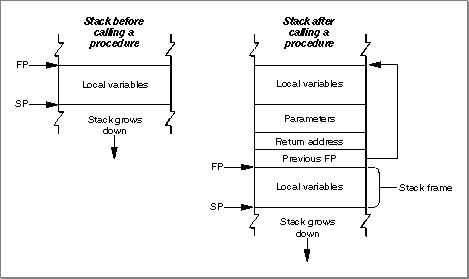
The stack pointer (SP) points to the top of the stack and defines its current downward limit. All operations that push data onto the stack or pop data off it do so by reading and then modifying the stack pointer. The Operating System uses the 680x0 register A7 as the stack pointer.
- Note
- By convention, the stack grows from high memory addresses toward low memory addresses. The end of the stack that grows or shrinks is usually referred to as the "top" of the stack, even though it's actually at the lower end of memory occupied by the stack.
The frame pointer (FP) points to the base in memory of the current stack frame, the area of the stack used by a routine for its parameters, return address, local variables, and temporary storage. Because the Operating System maintains the frame pointer, it can easily find the beginning of the stack frame when it's time to pop it off the stack. The Operating System uses the 680x0 register A6 as the frame pointer.
A routine's parameters are always placed on the stack above the frame pointer, and its local variables are always placed below the frame pointer. The 680x0 hardware enforces 16-bit alignment for parameters on the stack. So, for example, if you push a single byte onto the stack, the stack pointer is decremented by 2 bytes rather than 1.
The order of the parameters on the stack differs according to the language type of the called routine. When you call a C routine on a 680x0-based Macintosh computer, the parameters are pushed onto the stack in order from right to left. This order is dictated by the fact that the C language allows routines with a variable number of parameters. The first parameter (which often indicates how many parameters are being passed) must always be pushed onto the stack last, so that it resides at a fixed offset from the frame pointer. Moreover, because only the caller knows how many parameters it pushed onto the stack, it is always the caller's responsibility to pop the parameters off the stack. Finally, with C routines, a function result is returned in register D0 (or, for floating-point results, in register FPR0). However, structures and other large values are handled differently: the caller allocates space for the result and passes a pointer to that storage as the first (that is, leftmost) parameter.
The calling conventions for Pascal routines are different from those for C routines. For Pascal routines, the caller pushes space for the return result onto the stack before pushing the parameters. The caller pushes parameters onto the stack from left to right. Because Pascal does not allow routines with a variable number of parameters, the size of a stack frame can be determined at compile time. It is therefore the responsibility of the called routine to remove the parameters from the stack before returning.
There are still other calling conventions followed on 680x0-based Macintosh computers. Macintosh Toolbox managers generally follow Pascal conventions, although some of the most recent additions to the Toolbox follow C conventions. More importantly, the Macintosh Operating System typically ignores the stack altogether. Instead, Operating System calls generally pass parameters and return results in registers.
- Note
- These differences between C and Pascal are due entirely to
historical factors, not to any requirements of the 680x0
environment. It would have been possible for Pascal routines
to follow the C calling conventions.The PowerPC Calling Conventions
The native run-time environment on PowerPC processor-based Macintosh computers uses a set of uniform calling conventions:
Like the 680x0 run-time environment, the PowerPC run-time environment uses a grow-
- Parameters are processed from left to right and are placed into general-purpose registers GPR3 through GPR10 and (when necessary) floating-point registers FPR1 through FPR13.
- Function results are returned in GPR3, FPR1, or by passing a pointer to a structure as the implicit leftmost parameter (as in the 680x0 C implementation).
- Any parameters that do not fit into the designated registers are passed on the stack. In addition, enough space is allocated on the stack to hold all parameters, whether they are passed in registers or not.
down stack that contains areas for a routine's parameters, for linkage information, and for local variables. However, the organization of the stack in the PowerPC environment is significantly different from that in the 680x0 environment. The PowerPC run-time environment uses a single stack pointer and no frame pointer. To achieve this simplifica-
tion, the PowerPC stack has a much more rigidly defined structure than does the stack in the 680x0 environment. Figure 1-10 illustrates the general structure of the stack in the PowerPC environment.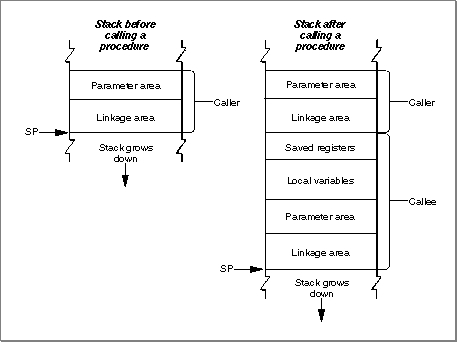 The caller's stack frame includes a parameter area and some linkage information. The parameter area in each stack frame is used by the caller to hold the parameters of any routines the caller calls (not the parameters of the caller itself). Of course, a given routine might in turn call several other routines; if so, the parameter area in the caller's stack frame is made large enough to accommodate the largest parameter list of all routines the caller calls. It is the caller's responsibility to set up the parameter area before each call to some other routine, and the callee's responsibility to access its parameters from that parameter area. See the following section, "Parameter Passing" on page 1-47, for details on the structure of a routine's parameter area.
Once the caller has set up the parameters for a call to some other routine, it then stores its own RTOC value in its linkage area, an area of the caller's stack frame that holds the saved stack pointer, Condition Register (CR), Link Register (LR), and RTOC values. It is necessary to save the caller's RTOC value because the callee might reside in another fragment, a situation that would require that the callee's RTOC value be installed in the RTOC. The caller always restores its RTOC value immediately upon return from the callee. The callee's prolog writes the saved Condition Register and Link Register into the caller's linkage area. The structure of a linkage area is illustrated in Figure 1-11.
Figure 1-11 The structure of a stack frame's linkage area
- IMPORTANT
- The RTOC value is saved and restored only for two kinds of subroutine calls: cross-TOC calls and pointer-based calls. In all other cases, the RTOC field of the caller's linkage area is ignored.
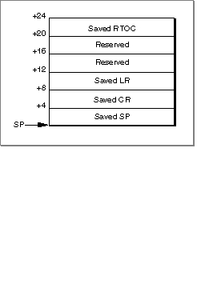 Notice that the linkage area always appears at the "top" of the stack, adjacent to the stack pointer. This positioning is necessary to allow the caller to find and restore the values saved there, and to allow the callee to find the caller's parameter area. One consequence of this requirement, however, is that a routine cannot push and pop arbitrary values on the stack after a stack frame is set up.
A PowerPC stack frame also includes space for the callee's local variables. In general, the general-purpose registers GPR13 through GPR31 and the floating-point registers FPR14 through FPR31 are reserved for a routine's local variables. If a particular routine has more local variables than fit entirely into the registers reserved for them, it uses addi-
tional space on the stack. The size of the area used for local variables is determined at compile time; once a stack frame is allocated, the area for local variables cannot grow
or shrink.The callee is responsible for allocating its own stack frame, making sure to preserve 8-byte alignment on the stack. The callee allocates its stack frame by decrementing the stack pointer, then writes the previous stack pointer into its own linkage area and saves all nonvolatile general-purpose and floating-point registers into the saved registers area of its stack frame. All of these actions are performed by a standard piece of compiler-generated code called the prolog.
When the callee exits, its epilog code restores the nonvolatile registers that its prolog previously saved. The Link Register and Condition Register are restored from the linkage area in the caller's stack frame. The nonvolatile general-purpose registers (namely, GPR13 through GPR31) and floating-point registers (namely, FPR14 through FPR31) are restored from the saved register area in the callee's stack frame. The RTOC value of the caller is, however, restored by the caller immediately upon return from the called routine.
- Note
- The order in which the callee's prolog performs these actions is determined by convention, not by any requirements of the PowerPC run-time architecture. Also, the callee saves only those nonvolatile registers it uses; if the callee doesn't change a particular nonvolatile register, it doesn't bother to save and restore it.
There is one special case in which a callee's stack usage does not conform to the structure shown in Figure 1-10--namely, when the callee is a leaf procedure. A leaf procedure
is a procedure that calls no other procedures. Because it doesn't call any procedures,
it doesn't need to allocate a parameter area on the stack. If, in addition, a leaf procedure doesn't need to use the stack for any local variables, it needs to save and restore only those nonvolatile registers that it uses for local parameters.Leaf procedures, due to their limited stack requirements, can use a special area on the stack called the Red Zone. The Red Zone is the area just below the stack pointer, in the area where a new stack frame normally would be allocated (see Figure 1-12). Because by definition only one leaf procedure can be active at any time, there is no possibility of multiple leaf procedures competing for the same Red Zone space.
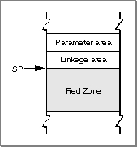 It's important to realize that a leaf procedure doesn't actually allocate a stack frame for itself and that it doesn't decrement the stack pointer. Instead, it stores its LR and CR values in the linkage area of the routine that calls it (if necessary) and stores the values
of any nonvolatile registers it uses in the Red Zone. As a result, the epilog of a leaf procedure doesn't need to tear down a stack frame. Instead, the epilog needs at most to restore the calling routine's LR and CR values. This allows leaf procedures to execute faster than they would if they had to set up and later tear down a complete stack frame.
Using the Red Zone in this way can, however, cause problems for native exception handlers, because an exception handler cannot know in advance if a leaf procedure is executing at the time the exception occurs (and hence cannot know if the Red Zone contains information that should be preserved). A native exception handler must therefore decrement the stack pointer by 224 bytes (the largest possible register save area) before using the stack, to skip over any Red Zone that might currently be in use.
- Note
- A leaf procedure uses the Red Zone in place of a stack frame only when your code is compiled with speed optimization enabled.
In general, you should use the new Exception Manager to install any native exception handlers your application or other software defines. The Exception Manager automati-
- Note
- The value 224 is the space occupied by nineteen 32-bit general-purpose registers plus eighteen 64-bit floating-point registers, rounded up to the nearest 8-byte boundary. If a leaf procedure's Red Zone usage would exceed 224 bytes, then the leaf procedure is forced to use a stack frame, like any other procedure.
cally adjusts the stack pointer before calling your exception handler and then restores it after your handler exits. See the chapter "Exception Manager" in this book for complete details on writing and installing a native exception handler.
- IMPORTANT
- The calling conventions and stack usage described in this section are those of the PPCC compiler and the Macintosh Operating System. Other compilers may employ different calling conventions.
Parameter Passing
In the PowerPC run-time environment, as you've already learned, parameters are usually passed from a caller to a callee in registers. The fact that there are many general-
purpose and floating-point registers dedicated for parameter passing makes it extremely likely that all of a subroutine's parameters can be passed in registers. Passing parameters in registers reduces the number of memory accesses required (namely, to read the stack frame) and thereby increases the performance of your software.Any parameters that cannot be passed in registers are instead passed in the parameter area of the caller's stack frame. This section describes the way in which a caller prepares the registers and the parameter area for the callee.
The compiler assigns parameters to registers and to the parameter area in the caller's stack frame according to this algorithm:
- IMPORTANT
- You need the information in this section only for machine-level debugging purposes, to understand the contents of the general-purpose and floating-point registers and the structure of the parameter area in a caller's stack frame.
The compiler generates a parameter area in the caller's stack frame that is large enough to hold all parameters passed to the callee, regardless of how many of the parameters are actually passed in registers. There are several reasons for this scheme. First of all, it provides the callee with space to store a register-based parameter if it wants to use one of the parameter registers for some other purpose (for instance, to pass parameters to a subroutine). In addition, routines with variable-length parameter lists must access their parameters from RAM, not from registers. Finally, code that is built to allow debugging automatically writes parameters from the parameter registers into the parameter area in the stack frame; this allows you to see all the parameters by looking only at that parameter area.
- The parameters are arranged in order as if they were fields of a record.
- The leftmost parameter is the first field.
- Each field is aligned on a 32-bit word boundary.
- Integer parameters occupying less than 32 bits are extended to 32 bits.
- Some parameter values are passed in registers.
- The first 8 words are passed in GPR3 through GPR10.
- However, the first 13 floating-point parameters are passed in FPR1 through FPR13.
- Simple function results are returned in GPR3 or FPR1.
- Composite data (that is, custom data structures such as Pascal records or C structures) are passed intact, without expanding the fields to achieve word alignment. When composite data is returned, the caller leaves enough room to hold the result on the stack, puts the address of the result into GPR3, and starts the parameters in GPR4.
- Any parameters that do not fit into the available registers are passed in the parameter area of the caller's stack frame.
Consider, for example, a function
MyFunctionwith this declaration:
void MyFunction (int i1, float f1, double d1, short s1, double d2, unsigned char c1, unsigned short s2, float f2, int i2);To see how the parameters of
- Note
- On the PowerPC processor, integers and long integers are both 32 bits long and short integers are 16 bits long. Variables of type
floatare
32 bits long; variables of typedoubleare 64 bits long.MyFunctionare arranged in the parameter area on the stack, first convert the parameter list into a structure, as follows:
struct params { int pi1; float pf1; double pd1; short ps1; double pd2; unsigned char pc1; unsigned short ps2; float pf2; int pi2; };This structure serves as a template for constructing the parameter area on the stack. (Remember that, in actual practice, many of these variables are passed in registers; nonetheless, the compiler still allocates space for all of them on the stack, for the reasons just mentioned.)The "top" position on the stack is for the field
pi1(the structure field corresponding to parameteri1). The floating-point fieldpf1is assigned to the next word in the parameter area. The 64-bitdoublefieldpd1is assigned to the next two words in the parameter area. Next, the short integer fieldps1is placed into the following 32-bit word; the original value ofps1is in the lower half of the word, and the padding is in the upper half. The remaining fields of theparamstructure are assigned space on the stack in exactly the same way, with unsigned values being extended to fill each field to a 32-bit word. The final arrangement of the stack is illustrated in Figure 1-13. (Because the stack grows down, it looks as though the fields of theparamsstructure are upside down.)Figure 1-13 The organization of the parameter area on the stack
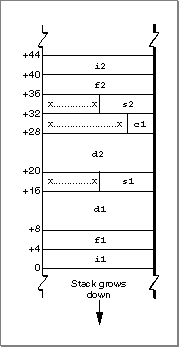 To see which parameters are passed in registers and which are passed on the stack, you need to map the stack, as illustrated in Figure 1-13, to the available general-purpose and floating-point registers. Registers GPR0 through GPR2, and register FPR0, are reserved for other uses. Therefore, the parameter
i1is passed in GPR3, the first available general-purpose register. The floating-point parameterf1is passed in FPR1, the first available floating-point register.Placing a floating-point parameter into a floating-point register also reserves one or two general-purpose registers, depending on whether the parameter is 32 or 64 bits long. This behavior is dictated in order to support the ability of a C function to call another function without knowing the number or types of the callee's parameters--that is, without knowing the callee's prototype. When no function prototype for the callee is available to the caller, the compiler cannot know whether to pass a given parameter
in the general-purpose (that is, fixed-point) registers or in the floating-point registers.
As a result, the compiler passes the parameter in both the floating-point and the general-
purpose registers.Even when the caller knows the function prototype of the callee, it still reserves one or two general-purpose registers for each floating-point register it fills. The only difference between cases in which the prototype is available and cases in which the prototype isn't available is that the floating-point parameters are copied into the general-purpose register(s) in the latter cases but not in the former.
The parameter
d1is placed into FPR2 and the corresponding general-purpose registers GPR5 and GPR6 are masked out. The parameters1is placed into the next available general-purpose register, GPR7. Parameterd2is placed into FPR3, with GPR8 and GPR9 masked out. Parameterc1is placed into GPR10, thereby exhausting all available general-
purpose registers. However, parameterf2is passed in FPR4, which is still available. Notice that there are no general-purpose registers that can be masked out for FPR4; as a result, the parameterf2is passed both in FPR4 and on the stack. Finally, parameterss2andi2must be passed on the stack, because there are no more general-purpose registers to hold them.
There is a special case that applies to routines that take a variable number of parameters (for example, the C language function
- Note
- It would have been possible to pass all the fixed-point values in registers if the floating-point parameters had been grouped at the end of the parameter list.
printf). The callee doesn't know how many parameters are being passed to it on any given call. As a result, the callee saves registers GPR3 through GPR10 into the parameter area and then walks through the parameter area to access its parameters. This means that the parameter area must contain at least
8 words.Import Libraries
You've already learned (in "Fragments" beginning on page 1-20) how a fragment can import code and data from some other fragment, which is always an import library. Because the code or data that your application references from an import library is not actually contained in your application--but is only linked to it dynamically at application launch time--the executable code of your application is generally much smaller than it otherwise would be. This is one of the main advantages of using import libraries.Of course, there's no particular advantage simply to moving code out of your application and into an import library, because the code in the import library, unless contained in ROM, must be loaded into RAM before it can be used. The real advantages accrue only when two or more applications use the same import library. The library's code is loaded into RAM only once, and all those applications reference that single code base. If you are developing several PowerPC applications that have parts of their source code in common, you should consider packaging all the shared code into an import library.
Another important advantage of using import libraries is that it's easy to update code contained in an import library. You can issue an updated version of your import library and have the changes propagate to all the applications that use that library. You don't need to update each individual application that uses the import library.
You can use shared libraries in other useful ways. You can, for instance, create a shared library that holds optional or infrequently executed code. For example, if you're writing a word-processing application, you might package its spell-checking module as a separate shared library. Because the Code Fragment Manager doesn't load the library at application launch time, your application uses less RAM and launches more quickly. When the user wants to execute the spelling checker, your application must explicitly load and prepare the shared library by calling Code Fragment Manager routines.
You can also use shared libraries as a way to allow other developers to add capabilities, such as optional tools, to your application. If you document the format of the parameters passed to an external routine and any other data that you expect to find in an optional tool, other developers can create shared libraries that conform to those specifications.
As you know, the principal advantage of using import libraries is that the code in the import library is loaded only once in memory, whence it is addressed by all applications (or other fragments) that import that code. The handling of an import library's data, however, is more complicated. The Code Fragment Manager supports two methods of allocating and using the static data (that is, global variables) in an import library:
The method of allocating and handling a library's global data is determined at link time. The library developer can indicate either global or per-context data instantiation for each
- Global instantiation. The Code Fragment Manager allocates a single copy of the library's global data, no matter how many clients use that data.
- Per-context instantiation. The Code Fragment Manager allocates one copy of the library's global data for each separate application (and all other fragments in the application's context) that uses that data. Each application can access only its own copy of the data. The Operating System automatically keeps track of which copy of the library's global data is in use by which context. If a given application attempts to load the same import library more than once, it always accesses the same copy of the library's global data.
separate data section in a library. The method selected by the library developer for a particular data section is recorded by the linker in the library itself. In general, it's best to use one copy of the global data per application.It's also possible to allocate one copy of an extension's global data for each request to load the extension, even if the same application issues multiple load requests. This type of data instantiation, called per-load instantiation, is available only when you explicitly load a shared library by calling a Code Fragment Manager routine (for example, the
GetSharedLibraryfunction). For example, a communications application might use a shared library to implement a tool for connecting to a serial port. By requesting per-load data instantiation, you can ensure that your tool can connect to two or more serial ports simultaneously by maintaining separate copies of the tool's data. The tool itself can then be ignorant of how many connections it's handling.The Code Fragment Manager honors the data allocation method recorded in the library for all import libraries that it loads automatically. This method must be either global or per context. To achieve a per-load instantiation of a library's data or to override the instantiation method recorded in the library, you must load and prepare the library programmatically by calling Code Fragment Manager routines.
The Organization of Memory
The organization of memory in the PowerPC run-time environment is reasonably similar to the organization of memory in the 680x0 run-time environment. The system partition occupies the lowest memory addresses, with most of the remaining space allocated to the Process Manager, which creates a partition for each opened application. Moreover, the organization of an application partition in the PowerPC run-time environment is reasonably similar to the organization of an application partition in the 680x0 run-time environment. In each application partition, there are a stack and a heap, as well as space for the application's global variables.There are, however, a number of important differences between the PowerPC and 680x0 environments in regard to how memory is organized, both globally and in each applica-
tion's partition. This section describes these differences. It also describes the different data alignment conventions used in each environment and the steps you might need to take to align data so that it can be exchanged between the two environments.
The two main differences between the 680x0 memory organization and the PowerPC memory organization concern the location of an application's code section and the location of an application's global variables. In addition, you need to pay attention to
- IMPORTANT
- In general, you need the information in this section only for debugging purposes (for example, to understand where in memory your application's code section is loaded). You might also need this information to help you determine how large to make your application partition (as specified in your application's
'SIZE'resource).
the differing data alignment rules in each environment.File Mapping
As you know, a PowerPC application's executable code and global data are typically stored in a fragment container in the application's data fork. When the application is launched, the code and data sections of that fragment are loaded into memory. The data section is loaded into the application's heap, as described more fully in the following section. The location of the application's code section varies, depending on whether or not virtual memory is enabled.If virtual memory is enabled, the Virtual Memory Manager uses a scheme called file mapping to map your application's fragment into memory: the Virtual Memory Manager uses the data fork of your application as the paging file for your application's code section. In the 680x0 environment, all unused pages of memory are written into a single systemwide backing-store file and reread from there when needed. This often results in a prolonged application launch, because an application's code is loaded into memory and then sometimes immediately written out to the backing-store file. In the PowerPC environment, this "thrashing" at application launch time is avoided; although the entire code fragment is mapped into the logical address space, only the needed portions of code are actually loaded into physical memory.
File mapping has additional benefits as well. The Operating System assumes that your application's code section is always read-only. This means that, when it's time to remove some of your application's code from memory (to page other code or data in), the Virtual Memory Manager doesn't need to write the pages back to the paging file. Instead, it simply purges the code from the needed pages, because it can always read the file-
mapped code back from the paging file (your application's data fork).
The virtual addresses occupied by the file-mapped pages of an application's (or an import library's) code are located outside both the system heap and the Process Manager's heap. As a result, an application's file-mapped code is never located in
- IMPORTANT
- Because your application's code section is marked read-only when virtual memory is enabled, it's not possible to write self-modifying code that will work on all PowerPC processor-based Macintosh computers.
the application heap itself.Figure 1-14 illustrates the general organization of memory when virtual memory is enabled. Application partitions (including the application's stack, heap, and global variables) are loaded into the Process Manager heap, which is paged to and from the systemwide backing-store file. Code sections of applications and import libraries are paged directly from the data fork of the application or import library file. Data sections of import libraries are put into an application's heap for any per-context instantiations and into the system heap for any global instantiations.
Figure 1-14 Organization of memory when virtual memory is enabled
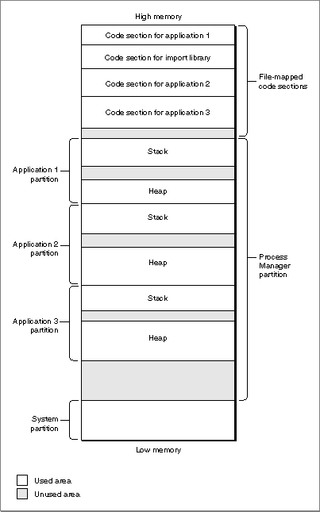 Sometimes, however, parts of your application's executable code are loaded into your application partition, not into the file-mapped space. This happens, for example, when you store an application extension (like a filter or a tool) as a resource in your applica-
tion's resource fork. To make the code in that extension available, you need to call the Resource Manager to load it into your application heap. Then you need to call the Code Fragment Manager to prepare the extension for execution. (See the chapter "Code Fragment Manager" in this book for a more detailed description of this way of executing resource-based code.) Because that code is loaded into your application heap, it isn't eligible for file mapping (although it is still eligible for normal paging).If virtual memory is not enabled, the code section of an application is loaded into the application heap. The Finder and Process Manager automatically expand your applica-
tion partition as necessary to hold that code section. The code sections of other fragments are put into part of the Process Manager's heap known as temporary memory. If no temporary memory is available, code sections are loaded into the system heap.
Figure 1-15 illustrates the general organization of memory when virtual memory is not enabled. Application partitions (including the application's stack, heap, and global variables) are loaded into the Process Manager heap. Code sections of applications and import libraries are loaded either into the Process Manager partition or (less commonly) into the system heap. No paging occurs.
- IMPORTANT
- It's possible for a fragment's code section to be loaded into the Process Manager's heap even when virtual memory is enabled. This happens whenever the fragment resides on a device that cannot be used as a paging device. For example, applications that are located on floppy disks, AppleShare servers, and compact discs cannot be file mapped.
Figure 1-15 Organization of memory when virtual memory is not enabled
The System Partition
The system partition in PowerPC processor-based Macintosh computers is organized
in essentially the same way as that in system software version 7.1 for 680x0-based computers. To support existing 680x0 applications and other software modules that access documented system global variables, the structure of much of the system partition remains unchanged. Both emulated 680x0 and native PowerPC system software compo-
nents use and maintain the system global variables. However, some undocumented system global variables have moved, and some have been eliminated altogether.The universal header files contain declarations for routines that you can use to access virtually all of the documented system global variables. For example, you can use the routines
LMGetCurDirStoreandLMSetCurDirStoreto get and set the value of the system global variableCurDirStore(which contains the directory ID of the current directory).LMGetCurDirStoreis declared essentially as follows:
#if USESCODEFRAGMENTS extern long LMGetCurDirStore(void); #else #define LMGetCurDirStore() (* (long *) 0x0398) #endifIn any environment that uses code fragments, the function LMGetCurDirStore is defined in the system software import library that is contained in ROM. In all other environments, the function LMGetCurDirStore is defined as a macro that reads the value of the appropriate low-memory address.By using the routines provided by the system software, you can insulate your application or other software module from any future changes in the arrangement of low memory.
The only other case in which your application might be affected by changes to the system partition concerns the method you use to install exception handlers. In the 680x0 environment, there is no programmatic way to install an exception handler; instead,
- Note
- See the MPW interface files for a complete listing of the routines you can use to access the system global variables. You should not use the compiler flag
USESCODEFRAGMENTSin your source code; if you need to know whether the Code Fragment Manager is available, you can call theGestaltfunction with the selectorgestaltCFMAttr.
you simply write the address of your exception handler into the appropriate location
in memory (as determined jointly by the kind of exception you want to handle and
the value in the microprocessor's vector base register). A PowerPC application cannot employ this method of installing exception handlers. Instead, the system software for PowerPC processor-based Macintosh computers includes the new Exception Manager, which you should use to install native PowerPC exception handlers. See the chapter "Exception Manager" in this book for details.Application Partitions
The organization of an application partition in the PowerPC environment is substantially simpler than in the 680x0 environment. In particular, the application partition for a PowerPC application consists only of a stack and a heap. The A5 world that occupies part of a 680x0 application partition largely is absent from the PowerPC environment. The information that is maintained in the A5 world for 680x0 applications is either no longer needed by PowerPC applications or is maintained elsewhere (usually in the application heap).
This section describes the new locations for the information in a 680x0 A5 world. Although in general the arrangement of your PowerPC application partition is trans-
- IMPORTANT
- Any software that makes assumptions about the organization of an application's A5 world will not work with PowerPC applications. For example, any 680x0 system extensions that modify an application's jump table will need to be rewritten to work with PowerPC applications.
parent to your application, there are some instances (for example, while debugging)
in which you might need to know where in your partition information is located. In addition, if your application previously depended on some information being in its
A5 world (that is, accessed through the address in the A5 register), you will need to revise it to remove that dependence if you want to recompile your source code into
a PowerPC application. More generally, you might need to rewrite any parts of your source code that depend on information being in any of the 680x0 registers.
The A5 world of a 680x0 application contains four kinds of data:
- Note
- For a more complete explanation of a 680x0 application's A5 world,
see Inside Macintosh: Memory.
Your 680x0 application's jump table contains an entry for each of the application's routines that is called by code in another segment. Because the executable code of a PowerPC application is not segmented, there is no need for a jump table in a PowerPC application partition.
- application global variables
- application QuickDraw global variables
- application parameters
- the application's jump table
In PowerPC applications, the application global variables are part of the fragment's data section, which the Code Fragment Manager loads into the application's heap. The application global variables are always allocated in a single nonrelocatable block and are addressed through a pointer in the fragment's table of contents.
- IMPORTANT
- The available PowerPC compilers ignore any segmentation directives
in your source code. In addition, the Segment Manager treats theUnloadSegprocedure as nonoperative.The application parameters are 32 bytes of memory located above the application global variables that are reserved for use by the Operating System. The first 4 bytes of those parameters are a pointer to the application's QuickDraw global variables, which contain information about the application's drawing environment. For PowerPC applications, the application parameters are maintained privately by the Operating System. In addition, an application's QuickDraw global variables are stored as part of the application's global variables (in a nonrelocatable block in the application's heap).
Because the PowerPC run-time libraries don't implicitly define the QuickDraw global variable
qdfor native applications (as they do in the 680x0 environment), you'll need to reserve space for them globally in your application and then pass the address of that memory to theInitGrafroutine. You can do this by using the code shown in Listing 1-11. The data typeQDGlobalsis defined in the QuickDraw header files.Listing 1-11 Declaring an application's QuickDraw global variables
#ifndef MAC68K # define MAC68K 0 /*for PowerPC code*/ #else # define MAC68K 1 /*for 680x0 code*/ #endif #if !MAC68K QDGlobals qd; #endif void DoInitManagers() /*initialize Toolbox managers*/ { InitGraf(&qd.thePort); InitFonts(); InitWindows(); InitMenus(); TEInit(); InitDialogs(nil); InitCursor(); }QuickDraw is one of the system software services that has been ported to native PowerPC code. It accesses the QuickDraw global variables of a 680x0 application by reading the application's A5 value that is stored in the 680x0 context block. That value points to the boundary between the application's global variables and the application parameters. As you've seen, the address of the QuickDraw global variables is the first
4 bytes of the application parameters.Even for applications that have themselves been ported to native PowerPC code, there must be a minimal A5 world to support some nonported system software--as well as some system software patches that exist as 680x0 code--that accesses the QuickDraw global variables relative to the application's A5 value. This mini-A5 world contains only a pointer to the application's QuickDraw global variables, which reside in the applica-
tion's global data section (in the application heap). The Process Manager creates a mini-A5 world for each native application at application launch time and installs its address in the 680x0 context block. As a result, the native QuickDraw can access the QuickDraw global variables of a native application in precisely the same way that it accesses the QuickDraw global variables of a 680x0 application (namely, by reading the value of the A5 register in the 680x0 context block and then finding the address of the QuickDraw global variables relative to the address of the A5 world).The general structure of a PowerPC application partition is illustrated in Figure 1-16.
Figure 1-16 The structure of a PowerPC application partition
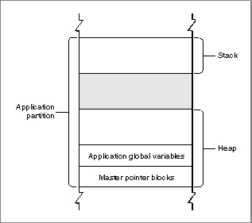
Because a PowerPC application has no A5 world (apart from the mini-A5 world main-
- IMPORTANT
- There is no guarantee that future versions of the run-time environment for PowerPC processor-based Macintosh computers will maintain
this arrangement of the application partition. To modify the size of
your application's stack, for example, you should use the techniques (described in the book Inside Macintosh: Memory) that use theGetApplLimitandSetApplLimitroutines. You should not directly modify system global variables (for instance,ApplLimit). Note, however, that you can specify a minimum stack size in your PowerPC application's'cfrg'resource. TheGetApplLimitandSetApplLimittechniques are still useful if you need to adjust that minimum size dynamically. A reasonable minimum stack size for PowerPC applications is 48 KB.
tained privately by the Process Manager), you don't ever need to explicitly set up and restore your application's A5 world. In the 680x0 environment, there are two times when you need to manage your A5 value explicitly: (1) to gain access to your application's global variables or QuickDraw global variables from within some piece of "detached" code installed by your application (such as a Time Manager task or a VBL task) and (2) to create a 680x0 context for some other piece of code (such as a HyperCard XCMD).In the first case, when you need to set up the A5 register for some piece of 680x0 code whose address you passed to the system software, there is no need for ported PowerPC code to set and restore the A5 register. The RTOC always points to the table of contents for the currently executing code, through which the application's global variables can be addressed. As a result, your application's global variables are transparently available to any code compiled into your application. To maintain a single source code base for both the 680x0 and the PowerPC environment, you can use conditional compilation. Consider the simple 680x0 VBL task defined in Listing 1-12.
Listing 1-12 A sample 680x0 VBL task definition
- Note
- See the chapter "Vertical Retrace Manager" in Inside Macintosh: Processes for a complete explanation of the techniques used in Listing 1-12.
VBLRecPtr GetVBLRec (void) = 0x2008; /*MOVE.L A0,D0*/ void DoVBL (VBLRecPtr recPtr) { gCounter++; /*modify a global variable*/ /*Reset vblCount so that this procedure executes again.*/ recPtr->myVBLTask.vblCount = kInterval; } void StartVBL (void) { long curA5; /*stored value of A5*/ VBLRecPtr recPtr; /*pointer to task record*/ recPtr = GetVBLRec(); /*get address of task record*/ /*Set our application's A5 and store old A5 in curA5.*/ curA5 = SetA5(recPtr->vblA5); DoVBL(recPtr); recPtr->myVBLTask.vblCount = kInterval; (void) SetA5(curA5); /*restore the old A5 value*/ }The procedureStartVBLdefined in Listing 1-12 installs the A5 value of the application by callingSetA5, passing in a value that it retrieves from an expanded VBL task record. In addition,StartVBLrestores the previous A5 value immediately before exiting. For VBL tasks written as PowerPC code, both of these steps are unnecessary. You can rewrite the procedureDoVBLto include those steps only conditionally, as shown in Listing 1-13. Moreover, in the 680x0 environment, the address of the VBL task record is passed in register A0. If you need that address in a high-level language, you need to retrieve it immediately upon entry to your VBL task (as is done using theGetVBLRecfunction in Listing 1-12). In the PowerPC environment, however, the address of the VBL task record is passed to the task as an explicit parameter. Listing 1-13 illustrates how to conditionally select the appropriate task declaration.Listing 1-13 A conditionalized VBL task definition
#if MAC68K VBLRecPtr GetVBLRec (void) = 0x2008; /*MOVE.L A0,D0*/ #endif void DoVBL (VBLRecPtr recPtr) { gCounter++; /*modify a global variable*/ /*Reset vblCount so that this procedure executes again.*/ recPtr->myVBLTask.vblCount = kInterval; } #if MAC68K void StartVBL (void) #else void StartVBL (VBLTaskPtr recPtr) #endif { #if MAC68K long curA5; /*stored value of A5*/ VBLRecPtr recPtr; /*pointer to task record*/ recPtr = GetVBLRec(); /*get address of task record*/ /*Set our application's A5 and store old A5 in curA5.*/ curA5 = SetA5(recPtr->vblA5); #endif DoVBL(recPtr); #if MAC68K (void) SetA5(curA5); /*restore the old A5 value*/ #endif }Listing 1-13 also removes the dependence on the inline assembly-language code that retrieves a pointer to the VBL task record from register A0. In the PowerPC environment, information is passed to interrupt tasks as explicit parameters.The second main case in which you need to set up and restore the A5 register is to create a 680x0 context for some existing 680x0 code (such as a stand-alone code module). To do this, you can call the SetA5 and SetCurrentA5 routines.
- Note
- See the book Inside Macintosh: Memory for more information on calling SetA5 and SetCurrentA5.
Data Alignment
The PowerPC and 680x0 compilers follow different conventions concerning the alignment of data in memory. Unless told to do otherwise, a compiler arranges a data structure
in memory so as to minimize the amount of time required to access the fields of the structure. In general, this is what you'd like to have happen. In some cases, however, the processor's preferred method of aligning data might lead to problems. Suppose, for example, that a PowerPC version of your application writes some data from memory into a file. The data is arranged in the file in exactly the same order that it was arranged
in memory, including any pad bytes that were required to achieve the desired data alignment in memory. It's likely, however, that the resulting file will not be readable by
a 680x0 version of your application. That's because the data will be read from the file
into a structure whose fields are very likely laid out slightly differently in memory. This section describes how this can happen, and provides some easy remedies for this kind
of problem.A 680x0 processor places very few restrictions on the alignment of data in memory. The processor can read or write a byte, word, or long word value at any even address in memory. In addition, the processor can read byte values at any address in memory. As a result, the only padding required might be a single byte to align 2-byte or larger fields to even boundaries or to make the size of an entire data structure an even number of bytes.
By contrast, the PowerPC processor prefers to access data in memory according to its natural alignment, which depends on the size of the data. A 1-byte value is always aligned in memory. A 2-byte value is aligned on any even address. A 4-byte value is aligned on any address that is divisible by 4, and so on. A PowerPC processor can access data that is not aligned on its natural boundary, but it performs aligned memory accesses more efficiently. As a result, PowerPC compilers usually insert pad bytes into data structures to enforce the preferred data alignment.
For example, consider the following data structure:
struct SampleStruct { short version; long address; short count; }This structure occupies 8 bytes of memory in the 680x0 environment. To achieve the desired alignment of theaddressfield in the PowerPC environment onto a 4-byte boundary, however, 2 bytes of padding are inserted after theversionfield. In addition, the structure itself is padded to a word boundary. As a result, the structure occupies
12 bytes of memory in the PowerPC environment.In general, the different data alignment conventions of the 680x0 and PowerPC environments should be transparent to your application. You need to worry about the differences only when you need to transfer data between the two environments. This can happen in a number of ways:
To ensure that data can be transferred successfully in all of these cases, it's sufficient simply to instruct the PowerPC compiler to use the 680x0 data alignment conventions. You can do this by using a compiler
- Your application creates files containing data structures and the user copies those files from a PowerPC processor-based Macintosh computer to a 680x0-based Macintosh computer (or vice versa).
- Your PowerPC application creates a data structure and passes it to some code running under the 68LC040 Emulator.
- Your application--running in either environment--customizes a Toolbox or Operating System data structure and passes it to the system software.
- Your PowerPC application sends data across a network connection to a 680x0-based Macintosh computer.
pragmastatement, as follows:
#pragma option align=mac68k struct SampleStruct { short version; long address; short count; } #pragma option align=resetYou should make sure, however, that you use 680x0 alignment only when absolutely necessary. The PowerPC processor is less efficient when accessing misaligned data than when accessing aligned data.Alternatively, instead of forcing the compiler to use 680x0 alignment in the PowerPC environment, you can try to rearrange your data structures to promote natural
alignment in both environments. For example, you can change the declaration of theSampleStructstructure to be as follows:
struct SampleStruct { long address; short count; short version; }A PowerPC compiler does not insert any pad bytes into theSampleStructstructure
in this new arrangement, because the fields are already aligned along the desired memory boundaries.
You also need to be careful when passing floating-point data between the 680x0 and PowerPC environments. The most efficient floating-point data type in the 680x0 environ-
- Note
- Your PowerPC compiler may use slightly different alignment methods than those described here. Consult your development system's documentation for complete information. For more details on specifying alignment methods with the PPCC compiler, see the book Macintosh on PowerPC C Compiler.
ment is the 80-bit (or 96-bit)extendeddata type. The most efficient data types in the PowerPC environment aresingle,double, andlong double, which are 32, 64, and 128 bits, respectively. The PowerPC Numerics library includes routines you can use to convert among these various data types. See Inside Macintosh: PowerPC Numerics for complete details.